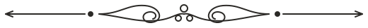
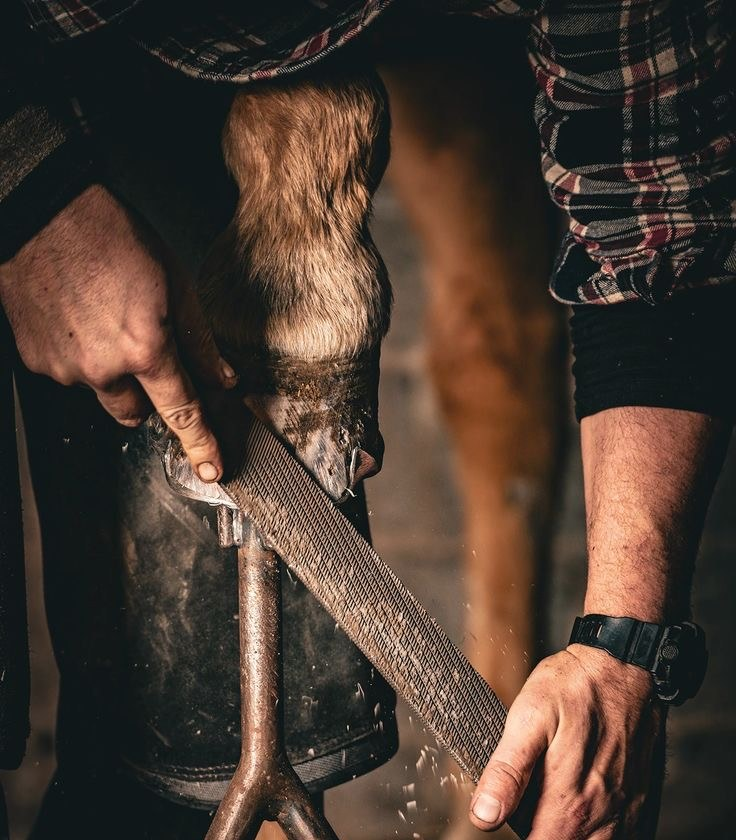

Een zelfstandige hoefsmid hanteert vaak een richttarief van gemiddeld € 50 per uur (excl. btw). In de praktijk wordt er echter per paard gerekend:
Het gemiddelde salaris van een hoefsmid in Gelderland bedraagt ongeveer € 2.833 bruto per maand. Hoewel dit het gemiddelde is voor loondienst in de regio, hangt het werkelijke inkomen sterk af van de manier waarop de hoefsmid werkt en het ervaringsniveau.